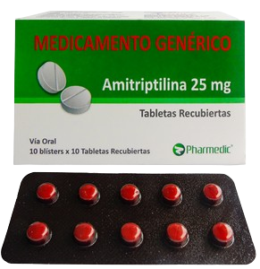
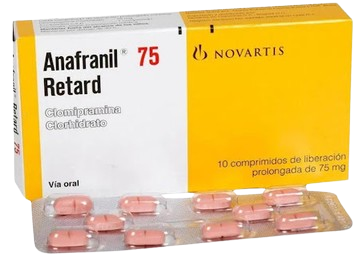

Antidepresivos
Se divide en cinco (5) grupos:
Indicaciones
Triciclicos & Tetraciclicos
Dosificación
Precauciones
Contraindicaciones
Medicamentos Triciclicos & Tetraciclicos

Amitriptilina
Antidepresivo tricíclico y un analgésico. Efectos bloqueantes sobre los canales iónicos de sodio, y el potasio.

Clomipramina
De los antidepresivos triciclícos es el inhibidor más selectivo y potente de la serotonina (5-HT).

Imipramina
Antidepresivo tricíclico que ocasionalmente se utiliza para el tratamiento del dolor neuropático.
Amitriptilina
Antidepresivo tricíclico y un analgésico. Efectos bloqueantes sobre los canales iónicos de sodio, y el potasio.
Clomipramina
De los antidepresivos triciclícos es el inhibidor más selectivo y potente de la serotonina (5-HT).
Imipramina
Antidepresivo tricíclico que ocasionalmente se utiliza para el tratamiento del dolor neuropático.
Inhibidores Selectivos de la Recapacitación de Serotonina (ISRS)
Indicaciones
Efectos Adversos
Medicamentos ISRS

Escitalopram
La disminución de los síntomas depresivos demoran 2 a 6 semanas.

Fluoxetina
La disminución de los síntomas depresivos demoran 2 a 6 semanas.

Fluvoxamina
Baja afinidad por receptores alfaadrenérgicos, ß-adrenérgicos, histaminérgicos, colinérgicos muscarínicos, dopaminérgicos y serotoninérgicos.
Inhibidores de la Recapacitación de Serotonina y Noradrenalina (IRSN)
Indicaciones
Efectos Adversos
Medicamentos IRSN

Desvenlafaxina
Efectos clínicos tardan 15 a 20 días en aparecer. Su acción consiste en aumentar la cantidad de serotonina y norepinefrina, sustancias naturales del cerebro que ayudan a mantener el equilibrio mental.

Duloxetina
Antidepresivo que ayuda a mejorar el estado de ánimo y a reducir los niveles de dolor. Los efectos clínicos tardan 15 a 20 días en aparecer.

Venlafaxina
Antidepresivo que mejora el estado de ánimo y reduce los síntomas de ansiedad. Los efectos clínicos tardan entre 15 y 20 días
Atípicos o de Segunda generación
Efectos Adversos
Medicamentos Atípicos

Agomelatina
Tiene un impacto significativo sobre el sueño de los pacientes con un trastorno depresivo mayor, con una mejoría de la calidad del sueño.
Bupropion
Fármaco de la clase de los antidepresivos atípicos, cuyas principales indicaciones son el tratamiento de depresión y la dependencia de nicotina.
Mirtazapina
Antidepresivo clasificado como un antagonista de los receptores de serotonina y noradrenalina. Modula estos neurotransmisores de forma indirecta.